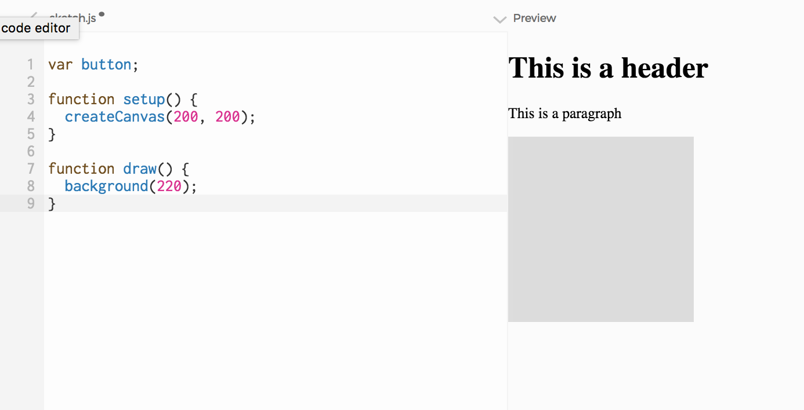
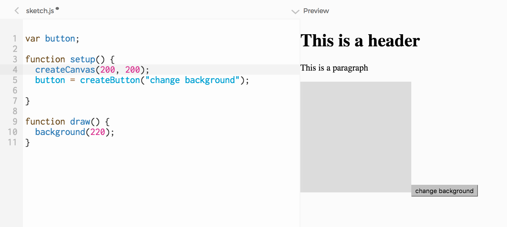
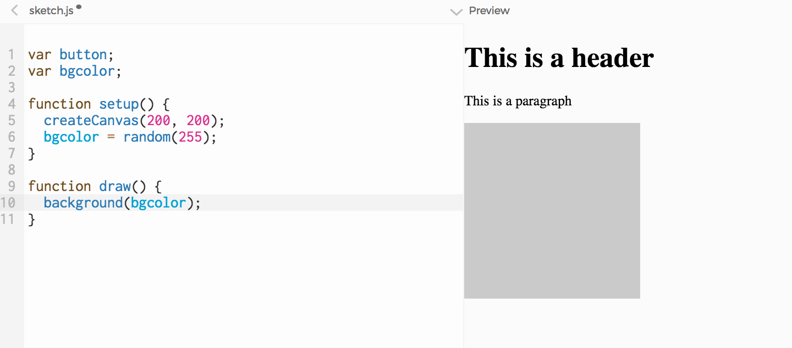

This learning activity introduces an important concept in Javascript programming: callback functions. Students create a button and program it to change the background color of their sketch, by binding the mousePressed event of their button to a callback function.
Overview
So far, we have created text-based HTML elements ––headers and paragraphs. But there is much more to HTML than just text. In this learning activity we will create a new kind of element: a button.
Once we have a button, we will program the background color of the canvas to change when the user clicks on it. To do this, we will learn about callback functions: functions that are set to be called when a specific event (like a mouse click) happens.
We have made sketches before where we created button behavior . You might remember this meant we had to detect where the mouse was relative to a rectangle or a circle, which in turn meant writing a series of if statements, and so on (see LA 2.2.3 – Is it over a rectangle?) .
Now, instead of adding code to mousePressed so that a rect or a ellipse on the canvas behave like a button, we are going to use the HTML button element.
The great thing about HTML buttons (and, actually, any HTML element), is that we don't need to detect where the mouse is when the user clicks it: the browser takes care of this for us. When the user clicks on an HTML element, the browser triggers a mousePressed event that's specific to the element that was clicked. And then we can tell the element (in this case, a button) which function should be called when its mousePressed event happens. This function is refered to as a callback function.
Let's start with a page that has an h1 element, a paragraph element, and a canvas element. We will add the h1 and the paragraph directly to the index.html file, and generate the canvas by calling p5's createCanvas function.

Now let's add an HTML button by calling p5's createButton function. Since we will need a reference to that button later on, let's store the result of createButton in a variable and call it 'button' (lines 1 and 5).

What we want to happen is this:
When the user clicks on the button, change the background color to a random shade of gray.
Let's start by adding a variable to hold the background color (line 2), setting it to a shade of gray in setup (line 6), and use it to set the background in draw(line 10).

Next let's create a function that does what we want to happen when the user clicks on the button: change the background color. We will name it changeColor:
function changeColor(){
bgcolor = random(255);
}
Now we need to tell the button that this is the function that should be called when the browser triggers its mousePressed event. Here is the line of code that does that: button.mousePressed(changeColor);
In other words, the line above binds an event that happens on our page (the mouse was pressed) to the code that holds the instructions of what to do when it does (the code in the changeColor function).
changeColoris our callback function: it is 'called back' whenever the mousePressed event happens.
Here is the complete code:
var button;
var bgcolor;
function setup() {
createCanvas(200, 200);
bgcolor = random(255);
button = createButton("change background");
button.mousePressed(changeColor);
}
function draw() {
background(bgcolor);
}
function changeColor(){
bgcolor = random(255);
}
Today we used a callback in a relatively simple context: creating an HTML button and making something happen on the canvas when the user clicks that button. But the concept of binding a particular set of code (the code in changeColor) to a particular action on the page (clicking on a button), is one that is crucial to Javascript programming.
Exercise: change this example so that the background is changed to a random color, rather than a random shade of gray.
Exercise: pick one of your sketches and add two HTML buttons to it. Clicking on each button should change something different on your canvas drawing ––maybe the position of an element changes, or its color.